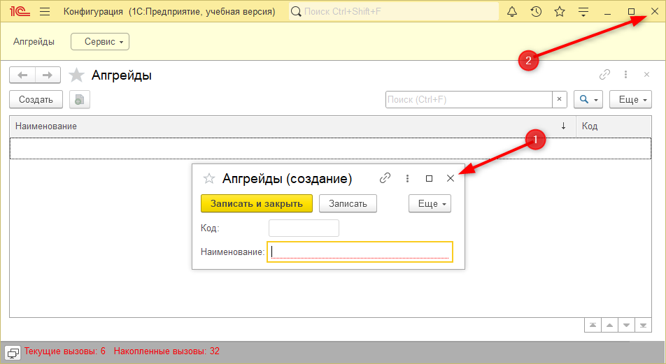
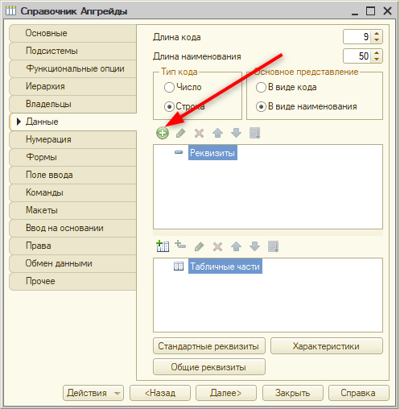

Для прохождения модуля "1С:Магнат" потребуется установить платформу "1С:Предприятие 8.3" актуальной версии.
Инструкцию по установке программы для популярных операционных систем и дистрибутивы можно найти по ссылке https://uc1.1c.ru/uchebnaya-versiya-1s/ или QR-коду.
Тема этого занятия – подготовка информационной базы к созданию новой, а также добавление данных о директоре магазина и создание механизма для хранения информации об апгрейдах.
После установки программы нужно создать новую информационную базу.
Информационная база – это совокупность функционала и данных, которые находятся в программе. |
Для создания информационной базы необходимо запустить ярлык программы "1С:Предприятие". Если на компьютере нет информационных баз, то появится окно (см. рис. 1.1), в котором необходимо выбрать вариант "Нет".
Рис. 1.1. Уведомление программы
Если ранее вы уже работали в программе и создавали свои приложения, то появится окно выбора информационной базы. В этом окне необходимо нажать на кнопку "Добавить" (рис. 1.2).
Рис. 1.2. Окно выбора информационной базы
Далее нужно выбрать вариант "Создание новой информационной базы" (рис. 1.3). После этого создадим пустую базу без конфигурации (рис. 1.4). На следующем шаге необходимо дать название информационной базе – "Модуль 2. "1С:Магнат" (рис. 1.5). Под этим названием ИБ будет отображаться в общем списке, поэтому название должно быть осмысленным.
Рис. 1.3. Создание новой информационной базы |
Рис. 1.4. Добавление информационной базы |
Рис. 1.5. Наименование информационной базы |
Информационная база будет располагаться локально. Далее необходимо указать каталог информационной базы (рис. 1.6). После выбора каталога необходимо нажать "Далее". В следующем окне нет необходимости менять какие-либо настройки и можно нажать "Готово" (рис. 1.7).
Каталог – это папка, в которой будут находиться файлы, необходимые для работы базы. Папку можно оставить по умолчанию, либо указать другой каталог. |
Рис. 1.6. Выбор каталога информационной базы |
Рис. 1.7. Завершение добавления информационной базы |
В результате в списке появится новая база: "Модуль 2. "1С:Магнат". Если сейчас нажать на кнопку "1С:Предприятие", то есть запустить режим пользователя (игрока), откроется пустое окно, так как функционал игры еще не разработан.
Приступим к разработке, запустим режим "Конфигуратор" (рис. 1.8).
Рис. 1.8. Запуск режима разработчика
После запуска режима "Конфигуратор" необходимо получить доступ к конструктору, из которого будет формироваться программа. Для того чтобы получить к нему доступ, нужно нажать в верхней панели на пункт "Конфигурация" и в списке выбрать пункт "Окно конфигурации" (рис. 1.9).
Из "дерева конфигурации" можно получить доступ ко всем объектам, из которых будет выстраиваться программа (рис. 1.10). В рамках создаваемой программы будут рассмотрены не все объекты конфигурации, поскольку многие из них нужны во взрослых задачах. А для решения этих задач требуются соответствующие знания и опыт.
Рис. 1.9. Открытие дерева конфигурации |
Рис. 1.10. Дерево конфигурации |
Перед тем как приступить к разработке игры, необходимо поставить задачу, которая будет реализована в рамках этого урока. Всего запланировано 3 задачи.
Первая задача: необходимо реализовать механизм, с помощью которого можно указывать, кто является директором магазина. В качестве директора будет выступать игрок. Эта задача сводится к тому, чтобы научить программу хранить информацию о директоре. Для этих целей подойдет объект конфигурации "Константа".
Константа – это значение, которое либо не изменяется вовсе, либо изменяется крайне редко. Вся разработка, которая проводится в окне конфигурации, не должна содержать персональных данных. |
Директора будет указывать сам игрок при запуске программы в режиме пользователя.
Для того чтобы создать новую константу, необходимо нажать по одноименной ветке правой кнопкой мыши и в появившемся списке выбрать "Добавить" (рис. 1.11).
Рис. 1.11. Добавление новой константы
После добавления константы в правой части откроется окно (палитра свойств), с помощью которого можно настроить созданную константу.
Заранее неизвестно, кто будет директором, но точно известно, что он будет. Укажем для константы обезличенное название – "Директор". Поле "синоним" заполнится автоматически после того, как будет нажата клавиша Enter.
Синоним – это название, которое видит пользователь (игрок). Благодаря синониму он поймет, что именно нужно указывать в поле. |
Информация о директоре может состоять из фамилии, имени и различных символов, то есть из текста. Текстовый тип в языке программирования – это строка. Укажем длину строки для имени директора – 50 символов. Этой длины будет достаточно, чтобы указать всю информацию.
Итоговый вариант настройки константы представлен на рисунке 1.12.
Рис. 1.12. Настройка константы
Перед тем как приступить к проверке созданного функционала, необходимо перенести его пользователям. Для этого потребуется обновить конфигурацию базы данных.
Конфигурация базы данных – это то, с чем взаимодействуют пользователи (игроки). Для ее обновления нужно попросить всех пользователей выйти из игры и только потом переносить новый функционал. |
Перенести функционал, то есть обновить конфигурацию базы данных, можно с помощью синего бочонка в верхней части экрана (рис. 1.13).
Рис. 1.13. Обновление конфигурации базы данных
После обновления открывается окно с информацией о том, что появился новый объект – константа "Директор". В этом окне нажимаем на кнопку "Принять" (рис. 1.14).
Рис. 1.14. Подтверждение изменений в структуре конфигурации
После обновления можно проверить новый функционал в режиме пользователя.
Запустить
пользовательский режим можно, нажав на кнопку "Сервис" в панели
главного меню и выбрав "1С:Предприятие" в выпавшем списке (рис. 1.15),
либо с помощью горячих клавиш Ctrl + F5.
Рис. 1.15. Запуск режима пользователя
В открывшемся режиме пользователя отображается кнопка "Сервис", в которой находится созданная нами константа "Директор" (рис. 1.16).
Рис. 1.16. Расположение константы "Директор" в режиме пользователя
Если нажать по кнопке "Директор", то откроется окно, в котором игрок сможет указать необходимые данные. Заполним данные о директоре нашего магазина (рис. 1.17).
Рис. 1.17. Заполнение информации о директоре
Далее необходимо сохранить введенные данные. Это можно сделать с помощью кнопки "Записать и закрыть", благодаря которой информация сохранится в программе, и окно закроется, либо можно нажать кнопку "Записать". Эта команда делает аналогичное действие – сохраняет информацию в программе, но не закрывает окно (рис. 1.18).
Рис. 1.18. Сохранение данных директора в программе
|
Одна из популярных ошибок, которые допускают при работе с программой, – это внесение изменений в режиме разработчика, пока еще открыт пользовательский режим. |
Например, изменим длину константы "Директор" на 100 (рис. 1.19).
Рис. 1.19. Изменение константы "Директор"
|
Кнопка обновления (бочонок) может быть недоступна из-за того, что активен режим редактирования. Чтобы из него выйти, необходимо подтвердить внесенные изменения, нажав левой кнопкой мыши в любом месте, кроме редактируемого поля. |
После внесения изменений обновляем конфигурацию базы данных. Если пользовательский режим был свернут, а не закрыт, возникнет ошибка исключительной блокировки информационной базы (рис. 1.20).
Рис. 1.20. Ошибка исключительной блокировки базы
Для того чтобы такой ошибки не возникало, необходимо закрывать режим пользователя перед внесением изменений. После закрытия пользовательского режима нужно нажать на кнопку "повторить", после чего изменения зафиксируются (рис. 1.21).
Рис. 1.21. Повторное обновление конфигурации базы данных
Вторая задача – реализовать хранение апгрейдов для магазина.
Апгрейды могут быть разными, поэтому их нужно классифицировать.
В системе должно быть четыре категории апгрейдов: они касаются количества сотрудников в магазине, "плюшек" для посетителей, улучшения логистики и улучшения магазина.
Апгрейды – это те четыре картинки, которые были изображены на главном экране (рис. 1.3).
Разновидности апгрейдов – это фиксированный набор. Для хранения таких данных подойдет объект конфигурации, который называется "перечисление".
Перечисление – это фиксированный набор значений, который не изменяется в процессе работы с прикладным решением (игрой). Перечисление задается в режиме разработчика. |
Для того чтобы добавить новое перечисление, необходимо найти его в дереве конфигурации, нажать правой кнопкой мыши и выбрать в появившемся списке "Добавить" (рис. 1.22).
Рис. 1.22. Добавление перечисления
В открывшемся окне редактирования нужно указать имя перечисления – "Виды апгрейдов" (рис. 1.23).
Рис. 1.23. Вкладка "Основные", перечисления "Виды апгрейдов"
После добавления нового перечисления можно указать набор вариантов, из которых выстроится взаимодействие пользователя с системой. Для того чтобы добавить варианты видов апгрейдов, перейдем на вкладку "Данные" и через плюсик добавим новое значение (рис. 1.24). С помощью палитры свойств можно указать имя, синоним и комментарий для каждого значения перечисления.
Рис. 1.24. Добавление нового значения перечисления
Имя – это то, что видит разработчик. Синоним – это то, что в системе увидит игрок. Комментарий нужен разработчику, чтобы пояснить назначение механизма другому разработчику. |
Если во время работы у вас закрылось окошко палитры свойств, его можно открыть двумя способами: двойным щелчком левой кнопкой мыши по конкретному значению, либо правой кнопкой мыши, затем выбрать в выпавшем списке "Свойства" (рис. 1.25).
Рис. 1.25. Открытие палитры свойств
|
При работе с палитрой свойств должна быть выключена (без рамки) "воронка", так как она убирает часть настроек (рис. 1.26). |
Рис. 1.26. "Воронка"
Поиск нужных свойств будет намного удобнее, если расположить их в виде закладок. Для этого необходимо нажать в любом пустом месте палитры свойств правой кнопкой мыши и в списке выбрать "Закладками" (рис. 1.27).
Рис. 1.27. Отображение палитры свойств закладками
Укажем значения для перечисления: "КоличествоСотрудников", "ПлюшкиДляГостей", "УлучшениеЛогистики", "УлучшениеМагазина" (рис. 1.28).
Рис. 1.28. Заполнение значений перечисления
Четыре разновидности видов апгрейдов готовы. Теперь необходимо прикрепить данный набор значений к самим апгрейдам.
Приступим к третьей задаче – хранение апгрейдов в системе.
Их может быть много, и в каждой системе (игре) они могут быть разными. Для хранения такой информации подойдет "Справочник ".
Справочник – это механизм, который позволяет хранить список. Список заполняет пользователь (игрок). |
Добавим новый справочник. Для этого в дереве конфигурации находим "Справочники", нажимаем по ним правой кнопкой мыши и выбираем "Добавить". Имя справочника укажем "Апгрейды" (рис. 1.29).
Рис. 1.29. Добавление нового справочника
Обновим конфигурацию базы данных с помощью синего бочонка и запустим режим пользователя, чтобы посмотреть, как все будет функционировать.
В пользовательском режиме появилась команда "Апгрейды" для перехода к новому справочнику (рис. 1.30).

Рис. 1.30. Пользовательский режим
Перечисление "Виды апгрейдов" нигде не отображается, поскольку является несамостоятельным уточняющим признаком.
Перейдем к апгрейдам. Для того чтобы создать новый апгрейд, необходимо нажать кнопку "Создать" (рис. 1.31).
Рис. 1.31. Создание нового апгрейда
Появляется окно, в котором можно указать наименование и код апгрейда.
Код элементов формируется автоматически, по сути, это порядковый номер элемента, а наименование необходимо заполнять вручную – это и есть название создаваемого апгрейда.
По умолчанию длина наименования ограничена, поэтому предварительно стоит ее увеличить.
Закроем режим пользователя (рис. 1.32) и вернемся в конфигуратор.

Рис. 1.32. Закрытие режима пользователя
Изменить длину наименования можно на вкладке "Данные". Укажем длину наименования – 50 символов (рис. 1.33).
Рис. 1.33. Изменение длины наименования в справочнике "Апгрейды"
|
Максимальная длина наименования – 150 символов. Максимальная длина кода – 50 символов. |
После изменения длины наименования обновим конфигурацию базы данных и заполним список апгрейдов в пользовательском режиме (рис. 1.34).
Рис. 1.34. Обновление конфигурации и запуск пользовательского режима
В пользовательском режиме необходимо нажать на "Апгрейды", чтобы перейти к списку текущих апгрейдов.
Для добавления записи о новом апгрейде нажмем на кнопку "Создать".
Добавим несколько апгрейдов для кассиров: один кассир, два кассира, три кассира, четыре кассира (рис. 1.35).
Рис. 1.35. Заполнение списка апгрейдов
Сортировка данного списка происходит по умолчанию по колонке "Наименование" в алфавитном порядке. Ее можно изменить на сортировку по коду (порядковому номеру), если нажать на колонку "Код" (рис. 1.36).
Рис. 1.36. Сортировка по колонке "Код"
Добавим еще несколько апгрейдов (рис. 1.37).
Рис. 1.37. Заполнение справочника "Апгрейды"
Записи в справочнике можно создать копированием (рис. 1.38).
Рис. 1.38. Копирование записей в справочнике
С помощью копирования можно создать записи "Курьер на мотоцикле" и "Курьер на автомобиле" (рис. 1.39). При создании элемента копированием копируется только наименование, а код создается новый, потому что он должен быть уникален. Это еще не все апгрейды, которые будут добавлены.
Рис. 1.39. Заполнение справочника копированием элементов
Сейчас необходимо разделить улучшения для магазина, которые уже созданы, на категории.
Явно выделяются две группы: количество сотрудников (одни, два, три и четыре кассира) и улучшение логистики (пеший курьер, курьеры на велосипеде, мотоцикле и автомобиле).
Для того чтобы разделить эти апгрейды на категории, потребуется подключить к данному списку виды апгрейдов, которые создавались ранее. Так, напротив кассиров будет написано, что это апгрейд "количество сотрудников", а курьеры – это "улучшение логистики".
Кроме того, апгрейды в игре можно будет покупать. Они дают бонусный рейтинг, но требуют минимального рейтинга для покупки. Потребуется добавить много дополнительных колонок, чтобы в каждой позиции было указано следующее: какой это вид апгрейда, сколько он стоит, какой у него рейтинг и какой минимальный рейтинг покупки.
Приступим к реализации и перейдем в режим конфигуратора.
|
Если окно редактирования было закрыто, его можно открыть повторно, нажав по необходимому объекту в дереве конфигурации два раза левой кнопкой мыши, либо правой кнопкой мыши, затем выбрать "Изменить". |
Для того чтобы добавить новые колонки, на вкладке "Данные" справочника "Апгрейды" добавим новые реквизиты. Добавить реквизит можно, нажав на соответствующую кнопку над окошком с реквизитами (рис. 1.40).

Рис. 1.40. Добавление нового реквизита
Первый реквизит, который необходимо добавить, – это "Вид апгрейда". Имя – "ВидАпгрейда", синоним – "Вид апгрейда". В данном случае тип "строка" не подойдет, так как строковый тип вводится с клавиатуры, а в системе уже предварительно был создан список апгрейдов в перечислении "Виды апгрейдов", и его можно использовать, сославшись на него. Тип реквизита – "ПеречислениеСсылка.ВидыАпгрейдов" (рис. 1.41).
Рис. 1.41. Добавление реквизита "Вид апгрейда"
Далее добавим еще одну колонку – "Цена". Цена – это числовое значение, так как она состоит только из цифр.
В случае с числовым типом данных доступны другие настройки, нежели со строкой: длина – сколько цифр находится в числе, например, число 10 состоит из двух цифр (1 и 0); точность – количество знаков после запятой; неотрицательное – если галочка установлена, то значение не может быть со знаком минус. |
Для реквизита, в котором будут храниться данные о цене, необходимо указать имя – "Цена", синоним – "Цена", длина – 10, точность – 0, неотрицательное (рис. 1.42).
Рис. 1.42. Добавление реквизита "Цена"
Добавим еще одну колонку для хранения информации о том, сколько очков дает апгрейд.
Имя реквизита – "Рейтинг", тип – "число", длина – 3, точность – 0, неотрицательное (рис. 1.43).
Рис.1.43. Добавление реквизита "Рейтинг"
Точно так же добавим еще один реквизит для хранения информации о минимальном рейтинге покупки. Имя реквизита – "МинимальныйРейтингДляПокупки", тип – "число", длина – 3, точность – 0, неотрицательное (рис. 1.44).
Рис.1.44. Добавление реквизита "Рейтинг"
|
Имена реквизитов, состоящие из более чем одного слова, пишутся по следующему принципу: все слова задаются слитно, каждое новое слово пишется с большой буквы, либо через нижнее подчеркивание. В начале имен реквизитов нельзя писать цифры, а также не следует использовать специальные символы. |
Обновим конфигурацию базы данных с помощью синего бочонка, запустим режим пользователя и полностью заполним справочник "Апгрейды".
В пользовательском режиме перейдем в справочник "Апгрейды" и настроим существующие записи. При открытии в карточке апгрейда могут отображаться не все созданные реквизиты. Для того чтобы это исправить, необходимо увеличить форму в размере, потянув за "уголок" (рис. 1.45).
Рис.1.45. Увеличение формы элемента
Итоговый вариант справочника представлен на рисунке 1.46.
Рис.1.46. Итоговый вариант справочника "Апгрейды"
|
У каждого вида апгрейда должен быть апгрейд с минимальным рейтингом для покупки – 0. Иначе у игрока не будет возможности прокачиваться. |
На этом первое занятие окончено!
В рамках этого занятия мы создали ячейку для хранения данных о директоре магазина, а также список апгрейдов. Помимо этого, мы разделили все апгрейды на категории.
На следующем занятии мы создадим механизм, который позволит хранить данные о товарах, которые игрок сможет покупать и продавать покупателям.
После прохождения каждого занятия рекомендуем повторить все термины, которые были изучены, а также закрепить пройденный материал, ответив на контрольные вопросы.
Это нужно запомнить |
|
|
Информационная база – это совокупность функционала и данных, которые находятся в программе. Каталог – это папка, в которой будут находиться файлы, необходимые для работы базы. Константа – это значение, которое либо не изменяется вовсе, либо изменяется крайне редко. Конфигурация базы данных – это то, с чем взаимодействуют пользователи (игроки). Для ее обновления нужно попросить всех пользователей выйти из игры и только потом переносить новый функционал. Перечисление – это фиксированный набор значений, который не изменяется в процессе работы с прикладным решением (игрой). Перечисление задается в режиме разработчика. Имя – это то, что видит разработчик. Синоним – это то, что в системе увидит игрок. Комментарий нужен разработчику, чтобы пояснить назначение механизма другому разработчику. Справочник – это механизм, который позволяет хранить список. |